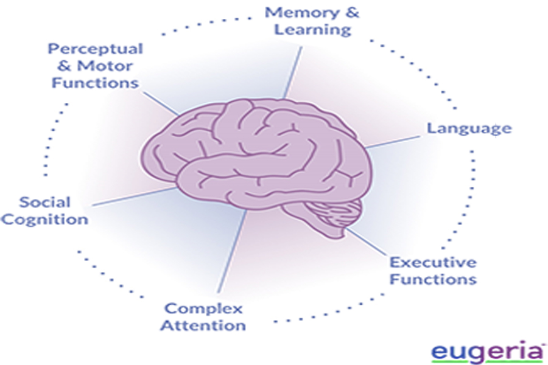
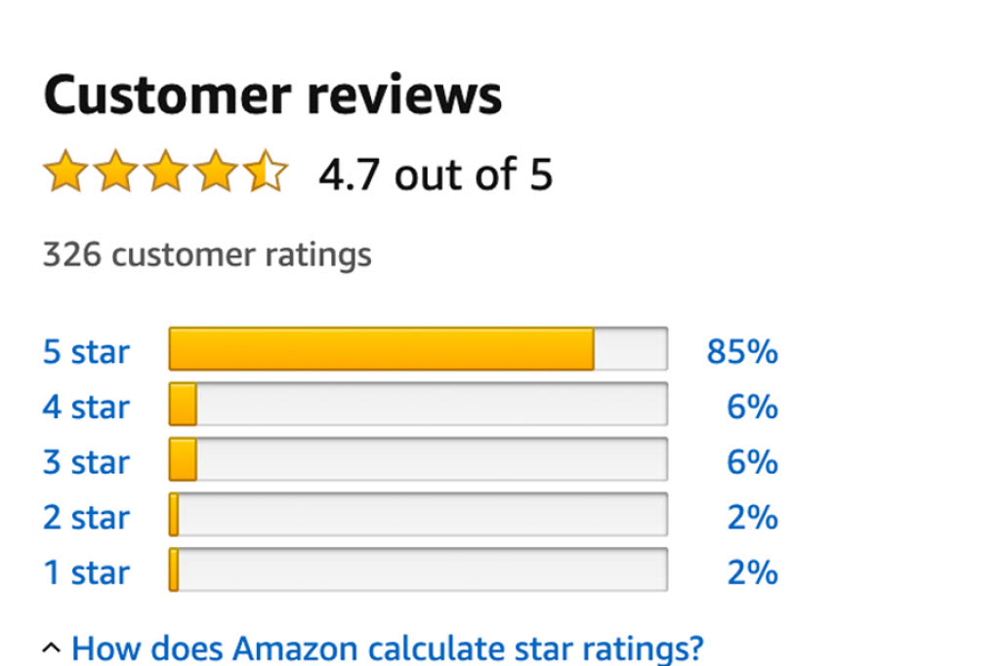
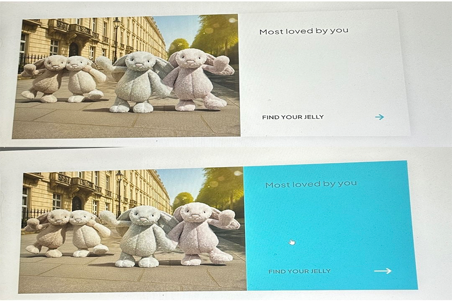

Ever wonder about how one can be successful in the business world? By the help of teamwork and establishing a system. In the digital world it consists of complex digital systems, a hint of system thinking and a side of model-based system engineering (MBSE). Even before the present times, they had a foundation to help each other grow and the creation grow. Without System Thinking and MBSE everything would go down the drain and leave chaos. We’ll learn the impacts of all the concepts in the following paragraph.
What is System Engineering
Behind every concept there's a foundation that is brought to light by an idea. In this instance, I'll review system engineering's foundation and transition into the definition of present times. According to Systems Engineering Demystified, John Holt quotes "Systems Engineering has been employed ever since mankind started building and developing complex systems (1)." This shows that even in earlier times there were engineering systems. To put this in another perspective, in Belize---specifically the Mayan Ruins---the Mayans created a system when creating buildings. Since the people were more on the shorter side, they learned to climb the buildings on fours to have a more effective way to continue building on higher surfaces. Another earlier civilization would be Ancient Egypt.
During their time there were hierarchies, different classes, and royalties. Within this they created a sense of a system of how things go down in history; they created a more organized way to deal with agriculture as well as creating the famous pyramids. As system engineers they didn’t have a compass, so they were able to detect direction based on the stars. As well as moving the stones during the building processes, they use sleds to make transportation more effective. Going into present times while focusing more on the development of complex digital systems some interfaces use these tactics. An example of complex digital systems would be social media platforms. Moreover, there are companies (Meta, TikTok, etc.) that have programmers, engineers, social media coordinators, directors, and more that work as a team/system to make the app soar to success. Overall, complex digital systems need to have a foundation of known history and are needed everywhere in the technological world to make sure everything runs smoothly.
Differences of Ways of Thinking and How to Compare
Onto system thinking, when one thinks about problem solvers, innovators, inventors, and creative-minded individuals is that they all have system thinking in common. For instance, all these people have characteristics that align with the system-thinking mindset. As mentioned in Systems engineering: principles and practice (Third Edition) Kossiaoff, Seymour, et.al says, "Systems thinking is the method of achieving and maintaining a system design in which every requirement is carefully monitored and carefully controlled, including the human factor." In other words, people who use system thinking in their daily lives achieve more. .This goes over how becoming more successful in maintaining designs and plans.
For example, if someone plans out their day, they're able to achieve what they would want to do that day. They think outside the box to solve their problems and think things out before going forward. This in comparison to linear/traditional thinking is simply the thought process of a person. For example, A person with traditional/linear thinking is when there's a point A to point B and it has a connected sequence of thoughts. Nothing goes outside those points and keeps moving straight no detours. System thinking is the ability to take any steps to achieve the goal or plan they anticipated. If there was a problem or obstacle, they would be able to move around it. This is useful to know because one won’t be successful in life if one isn’t systematic-minded. Why I say this is because they aren’t able to change and grow as an individual if it’s constantly the same path. One won’t be able to learn if they don’t change thought processes now and then. Sure, traditional linear thinkers know the correct thought process, however, what if there was a better approach to a situation? This shows how a change of mindset can make a person grow as opposed to staying the same.
Examples of Application of System Engineering and Thinking
To put this in perspective let's imagine a common retail floor; there are cashiers, sales associates, managers, and stock associates. For the floor and sales to go up there must be proper system engineering to run the business smoothly. When it comes to system thinking, all workers must have this characteristic to deal with any conflict and upset customers. When it comes to my personal experience, I’ve worked in retail for three years, and within all my jobs in the industry, there was a system in place. What I mean by this is that there were rules and instructions to follow to make sure everyone knew how to do their job. Especially during the training week, the managers go over the dos and don’ts of what to do in the workplace as well as paperwork to ensure systematic thinking for all workers to rely on. Working in Bath and Body Works there was a particular way to do online orders. There was label making, a tablet that was connected to online orders, and a basket to help move across the room while holding the products. . This ensured completing the online order in a good amount of time
My other experience in retail was working at ZARA. This store was about having great customer service, providing help when needed and being inclusive of everyone. While getting the job there was a similar procedure in regards of Bath and Body Work’s training. It consisted of paperwork, policies to abide by, handling the cash register, and self-kiosks. I was new to the kiosk and helping customers at self-check-out. The person training me showed me what to do and what to do in regard to how to handle the kiosks. ZARA had this system where when we needed help by called the managers if we had questions or concerns. This created an atmosphere where all the workers knew what to do if anything popped up. ZARA and Bath and Body Works taught me to work coordinately with the companies' beliefs and staying within orders of higher-ups in control of the system will make a stronger organization. All in all, system thinking is a must---especially in the workspace--- for an organized system to help our customers and stakeholders of the company.
Additionally in regard to application one must mention Model-Based System Engineering (MBSE). In one instance, MBSE is used to analyze complex systems and helps aid in the creation from the beginning to the end. Going more into the topic at hand, the application of system engineering would be; companies in the car industry. Pointers to investigate for car companies and vehicles is that MBSE is used in the processes of creating software, hardware, and electrical vehicles. They must get approved for the projects that are being made to ensure a good quality vehicle. Speaking about transportation, how does public transportation run smoothly? Well, for starters they use MBSE as their foundation to get from point A to point B smoothly. Looking into the details, public transportation uses subways, highways, and light rails, and what they all have in common is control systems. The control system where MBSE comes into play consists of; route planning, scheduling, capacity, traffic signal priority, accessibility features, and more that make public transportation as efficient as possible. This comes to show that both System Thinking and MBSE are important for any project known to man it’s just projected in a different light depending on the cause and company
Overall Thoughts and Conclusion
In summary, system thinking and MBSE were expressed throughout time. Using my example in the beginning of the creation of the Mayan Ruins where they had stone tools and short citizens and all the way to present times where technology is booming within the software industry and business industry. Without older generations' tactics of communication, thinking, organization, and the idea of what a system is there wouldn’t be a source to grow. Additionally, when it comes to thinking and communicating with a systematic mindset it’s a great characteristic to have in regard to starting projects and being in a work and business setting. In the workspace, it’s an advantage to be able to go outside the box in the sense of working through conflict and working through even obstacles. Moreover, inventors, innovators, developers, and more have this mindset and this shows the people who stand out and create new inventions are the people who are willing to go up and beyond for the project. In comparison to traditional linear thinking going from point A to point b with no detours because it’s straightforward, one won’t go anywhere in life if one doesn’t challenge one’s thinking. Another point that is mentioned within this blog is Model Based System Engineering (MBSE). When it comes to operations, projects, and new creations going is when MBSE gets involved. Without, MBSE all the listings above won’t be organized and not even published due to information being lost, not all the details being in the software, the system being bugged and there isn’t anyone to check, and more. MBSE helps aid any flaws within the system and without it being established everything goes down into shambles. Overall, both systematic thinking and system engineering models impact our everyday lives whether it is day-to-day projects, transportation, businesses, retail and so much more. There’s more that happens behind the scenes than what is shown upfront.
Module 1.2 Blog Post
Introduction
In life there are steps that are in place to keep an organized system. One needs to realize that these components can be put in the technological world. From a 9-5 job all the way to creating a new product. Planning processes look different for everyone due to different goals, products and designs. With that in mind there are several different life cycle models that a person can use to face the new design head on. SDLC is the foundation of the planning process in order for the creation to be perfect. Additionally, MBSE works perfectly hand in hand with SDLC. Which is important to recognize while going through the blog.
What is the Systems Development Life Cycle?
Going into what SDLC is it stands for System Development Life Cycle. This system is implemented in all organizations, companies, business and most importantly user interfaces. As in any group enviornment there are steps and rules to abide by in order to keep a organized team and coordinate efficently. As mentioned in the diagram. IMAGE SDLC
Planning and Requirements Analysis:
This step is mostly surrounded by developers in which they create the foundation based on information that was given.
Defining Requirements:
For the process to pass it must be approved from customers and partners to ensure success. As well as fit the guidelines for SRS (Software Requirement Specification).
Design
In this stage, this is where the designers of the software come together. They make multiple designs, and which gets presented to DDS (Design Document Specification). Whichever one fits the company the best in a practical manner gets chosen.
Development:
During this stage, the developers start to work by following the design as well as company protocol. With this they will need tech specialists to emphasize no mistakes and if there are any debug them while the process is on the move.
Testing
Just like any new project, there needs to be a test to check for any complications, flaws, and anything under the sun that doesn't follow the company protocol. Also, in this step there will be some documentation to tract to ensure the best regarding who to hire to do the job correctly.
Deployment and Maintenance
This is the last stage of SDLC and if the testing goes well, valuable feedback and company approves than company releases it.
Note that the bulleted information came from the same article.
SDLC Real Life Examples
To put this in perspective, a real-life example of using these steps would be; being a part of the gaming industry and the company is going to release a new game. The developers and engineers need to go through the planning step to get everything aligned with the information given. Additionally, the defining requirements step is when testers and stakeholders approve the project to ensure success. Next would be the design step with this it entails the graphic designers for the game come together and work on the visuals for the game, if there were no visuals it wouldn’t be appealing to customers in which loses revenue. After that there’s the development stage similar to the planning step but, the game developers go over the design and double check that it fits the company protocol and get technicians involved to solve any issues/conflict that the project may have. Later, the testing step is in motion and this step in particular is an extension of development in a sense of making sure nothing is off with the project and the game moves smoothly. As well as making sure there’s required documentation that goes along with the game. And the last step would be deployment and maintenance this stage is when it’s approved by higher ups, approved and when it’s uploaded customers and stakeholders are given back feedback on the game either positive or negative. This is just one real life example of how SDLC is applied but, one could imagine that anything that is involved with software that SDLC is present in which it seems fit for the company.
Intro of the Life Cycle Models
Before heading straight into Life Cycle Models there will be an acronym that will be mentioned often through this paragraph and its MBSE which stands for Model Based Systems Engineering. This is important because this goes under all the following models that will be listed shortly. Moreover, in the article Systems Engineering Demystified (Second Edition). John Holt goes over" When modeling a System, it is important that the Model represents the System of Interest as accurately as possible or, to put this another way, as accurately as is necessary to develop the System successfully".
While looking more into MBSE in the Life Cycles one should know that System of Interest is needed for any model to be successful. Along with System Hierarchy and all models have a natural hierarchy and it is a part of the Ontology. Ontology is a branch of philosophy that studies concepts. So, with this in mind they work together throughout all models.
Now onto the topic at hand, there are a lot of Life Cycle models but, the main ones are; Waterfall Model, Agile Model, V-Shaped Model, Iterative Model and the Spiral Model. They use the stages as mentioned above but in separate ways. According to Advantages and Disadvantages of SDLC (Software Development Life Cycle) Ghosh goes over "The Waterfall Model, introduced as the pioneer among process models, follows a linear-sequential life cycle approach, AGILE is a development approach that emphasizes continuous iteration of development and testing throughout the software development lifecycle, V-Shaped methodology, also known as the Verification and Validation model, is a software development lifecycle approach executed in a sequential manner resembling a V-shape, Iterative development is a methodology that involves breaking down the software development process into smaller, manageable chunks and he Spiral model, a hybrid approach blending iterative development with the structured elements of the waterfall model, prioritizes risk analysis throughout the software development lifecycle." All in all, they have important roles and with everything there are advantages and disadvantages.
Advantages and Disadvantages of Life Cycle Models
Speaking of Advantages and Disadvantages of the Life Cycle Models, in this paragraph I will be listing them down below. Starting off with the Waterfall Model the advantages would be how easily readable and how it can comprehethe business how processing can happen at once. The downside to this model is that once it's final, there is no going back, customers can only see it during the final stage, and anything complex would be difficult.
For the Agile Model the advantages would be; changing anything within itself is easy to do, stakeholders can see the entire process and customers can engage with the model. The downside is it lacks design and documentation of the project and heavy reliance on others.
In regards, the V Shape Model the advantages are that it's easy to plan and design, this model can prevent flaws and defect flow. On the other hand, the disadvantage is that there is not a lot of flexibility, we cannot access earlier versions of prototypes and if there is too many changes it can create inconsistency.
For Iterative model advantages are it's overall easier to use, more flexible and cheaper than other models, milestones can be effectively manageable. The downside is no overlapping information; the process is rigid and not upfront, so later it can cause problems.
Lastly, the Spiral model advantages are for later changes its flexible, repetitive is key for effective management, can ask for customer feedback as well as rapid development. Downsides are the ability to only be suitable for large projects, extremely strict, need more documentation, risk on budgets and might not be able to meet the numbers. As a result of all these points, when looking for a specific model make sure it fits your project and what you are willing to face in regards of conflict and additional factors that can pop up while going through the process.
Reflection of Importance of SDLC and its Evolution
In Conclusion, SDLC is important to have because there are stages and models that need to be followed to fit the needs of customers, stakeholders, companies and more. When starting a project, it's always good to know what you're getting out of the project while using one of the Life Cycle Models. To add on while designing it's good to use SDLC's stages to make sure it aligns with what your clients want. What I mean by this is each model is created to suit different purposes; there are ones that are better with smaller projects and some that support larger projects etc. Sustainability is an important factor in regards of SDLC because money is pricy and depending on the budget it is always good to do research on which model fits within how much one can spend. This is because depending on how much one puts into the project will also impact how much one will need to spend to not only create the project but also hire specialists to make it a success. Finally, the evolution of digital systems first started with a linear process and now it expands to multiple stages and shapes so that any developer can choose what fits best for their project.
Module 2.1 Blog Post
Introduction
During day-to-day life we go through obstacles and problems. And with an open mindset we can adjust and create compromises to fix the issues at hand. This system is also used in the IT industry, but this is called human centered design. They used an open mindset and related to others for their products and services with a human opinion and ideas. Additionally, this goes hand in hand with perception due to connecting to the viewpoints of the world and how this influences reality. As well as visual hierarchy due to highlighting the most important parts and contrast the negative or as in an IT perspective bring your product to the light and dim the competitors by being more unique and abstract. As well as UX Laws that cover what to look out for while someone is designing. All of the topics mentioned will go in depth in the next paragraphs.
What is Human Centered Design?
Human centered design is centered around problem solving with the aspect of human’s opinions and thoughts while designing new projects and ideas. According to “What is Human-Centered Design?” Lauren Landry shows a visual that represent the four thinking stages; Clarify, Ideate, Develop and Implement.” This shows that multiple designs are under steps to keep everything cohesive and efficient. To go more into depth, here are what all the steps emphasize and examples to go along with them.
Clarify
is the first step; it goes into collecting intel on the issue that customers have, and problem solving. While using human center mentality the creator will step into the customers shoes and fix the problem at hand. An example of this would be when Amazon has a review button where customers can leave feedback, and the creator can take the feedback and take it into consideration and make changes. For this to be put into place there needs to be empathy with the customers' feelings. Without this aspect in mind there wouldn’t be human centered design in the first place.
Ideate
This is the second step; this is where creators will go into problem solving mode and use different tactics to solve the issues from the clarify stage. There will be times where there’s a fixed mindset of how to fix problems and that may not be the right approach. So, using system thinking along with a human centered design business will go far. An example of the ideate stage in real life perspective is, my time management is not the best and causes conflict academically in the long run. Instead of sticking to my bad habits I must ideate a better way to have better time management skills and plan specifically when I should do homework and make goals on how to do that.
Developing
this is the third step; this is when the brainstorming of new tactics and going through all the issues at hand. In the development step is in action there are also factors to consider. Is it possible to create, will customers want the product/service and how will this product run long term? These are very important in regards of meeting customers' needs because without customers there will be no business and that would lose revenue. In my marketing class I learned that if there’s no superior customer value then there are competitors that will gladly take their customers that meet those desires.
Implement
this is the last step; this is where all the steps above are displayed and implemented into a new model. Additionally, this step is good to connect with customers and stakeholders their opinion if it matches all the requirements that meet their desires. Once it’s created it's also good to continue making new products to grab the eyes of loyal customers but also new customers. An example would be Popmart’s Labubu blind boxes. Although they were very successful with the Macaron and Have a Seat series once the newest series came to Big Energy the customers grabbed onto Labubu’s more.
Overall Human Centered Designs are crucial to have in the business world.
Comparison of ISO 9241-210 and IDEO.org Field Guide
Furthermore, we’re moving into the ISO/IDEOs, the definition of each as well as what’s similar factors versus opposite factors. Starting with ISO 9241-210, it stands for (International Organization System). It’s the standard system where it handles specifically interfaces but also centers the mentality of Human Centered Design. Not only do they emphasize Human Centered design but also, user usability and needs. What this entails is putting the customers first and ensuring all the issues are fixed with a real person’s sympathy in mind. Adding on, user usability and need goes over how much a product/service will be used as well as what the users really want in terms of needs.
With ISO, they are more on the formal side where all the information is specific to user involvement and uses that for analysis to go over traceability. This shows how impactful ISO 9241-210 is in a business setting and customer level understanding. According to,“Designing Mind in Mind”Jeff Johnson says “For a very brief period following the recognition—between 0.15 and 0.45 second—we are nearly deaf and blind to other visual stimuli, even though our ears and eyes stay functional. Researchers call this the attentional blink (5)”. As a result of attentional blink customers, they will get distracted and won’t investigate the ISO 9241-210 that was implanted in the business. To clarify recognition between 0.15 and 0.45 seconds are not being processed. This shows that a business and that ISO 9241-210 is recognized to ensure that the customers understand the product., An example implanting ISO 9241-210 would be looking out for the safety of customers car companies would create training tests with dummies to determine the strength in a car. The car companies do this to ensure the best model for the client, and it will increase superior customer value if there’s tests prior to ensuring which models are effective and which ones aren’t. This shows how much effort and statistics goes into ISO 9241-210.
Moving onto IDEO, it isn’t an acronym it’s just a name of a way of designing with the inspiration using the word idea but, with a O. In the reading Field Guide, it goes over “, we’ve used human-centered design for decades to create products, services, experiences, and social enterprises that have been adopted and embraced because we’ve kept people’s lives and desires at the core.” IDEO’s designs goes over how everything they plan is up dependent on the customers want no matter what. This shows how IDEO puts the effort for the users despite whatever they come across. In addition, IDEO is more an informal approach due to the flexibility and the more creative side this design approach has in comparison of ISO. An example of IDEO being implemented would be when there’s a drink not doing good in stores and take everything into consideration. There would be multiple trials, multiple tasks to make it plesant to the customers and more. IDEO is for more customer-based mindset moreover a company mindset. To compare the two ISO is more statistically bases and more formal approach of designing when creating a project that is customer based. IDEO takes the customer base to another level, IDEO has that mindset and makes it their core purpose. When there’s a project that is following the IDEO field guide it’s explaining how their business is morally based off real customers feedback, and they’ll do anything to solve the issues at hand
Examples of Perception and Visual Hierarchy Affect Usability
Continuing to have perception and visual hierarchy affect usability. Before going straight into examples of each topic we’ll go into what they mean. Starting with perception, it is like a bias in a way it can be heavily swayed from life experiences, trauma and goals one has. To rephrase this sentence perception is how one looks at the world and how the factors I listed above can influence one’s mindset. An example of this would be, family trauma that I have in my past changed my perception of what emotions are or what communication should and should not be.
Another example of perception would be, when I would watch Disney movies growing up one of my favorites would be Beauty and the Beast because my family nickname is Belle, so I had a perception that Princess Belle is the best because of the name. Perception puts everything in perspective in regards of bias, the past, advertisement and more. Next would be how visual hierarchy affects usability. Going into what visual hierarchy is, it’s the ability to highlight important information and contrast the commercials of the other competitors. In other words, visual hierarchy plays a big role in superior customer value.
According to “The Impact of Visual Hierarchy in User Interface Design: A Cognitive Perspective” Association of Human-Computer Interaction goes over “User Interface (UI) design plays a vital role in shaping users’ experiences and interactions with digital products. Within UI design, visual hierarchy serves as a powerful tool to guide users’ attention, organize information, and enhance usability.” An example of this would be, there are many advertisements for toothpaste and the brand His Smile goes to extensive measures for using the contrast of purple to cancel out yellow and crazy sales so customers will have more visual hierarchy of His Smile in comparison to their competitors. As this explains the importance of UI design and visual hierarchy coming hand in hand, it also explains why many programs use this tactic.
In regards of UI and Visual Hierarchy’s usability User Interface devices need visual hierarchy for the usability to increase. Additionally, using a metaphor, once a plant gains water it grows and gets stronger. In this instance the User Interface is the plant, the Visual Hierarchy is the water, and the Usability is the increase of growth it’ll gain. An example of this would be let’s say the newest model of the iPhone. It’ll gain the attention of the customers with the new features (which is the visual hierarchy coming in) and with all the commercial and advertising it’ll gain usability and increase the need to want the product. This shows how important it is for User Interface and Visual Hierarchy to work as a team.
What are the Laws of UX?
Lastly, we’re going into a few UX laws, and it includes Jakob’s, Fitt’s, Hick’s and Miller’s. For context UX stands for User Experience. All of these laws are crucial to having a strong business. I’ll be mentioning them below with a definition and example along with it.
Jakob’s Law:
Is not to be original but, to fall into trends that are already working well in other websites. He says this because being original with a concept may be too abstract to get the users eye and business will decrease. An example of this law would be there are real Louis Vuitton bags that are thousands of dollars but, due to the command for these bags there will be resellers that will make fakes to make money. Although this is not the best strategy morally it still gives the business up and moving. Another example would be bodysuits; there are many websites that are doing well by selling bodysuits so there are companies copying that idea to make their own money. Although this is not the best strategy morally it still gives the business up and moving.
Miller’s Law:
His law contains the work of chunking up information for there to not cause short term memory loss. In the textbook “Laws in UX” Yablonski goes over “User Interface (UI) design plays a vital role in shaping users’ experiences and interactions with digital products. Within UI design, visual hierarchy serves as a powerful tool to guide users’ attention, organize information, and enhance usability.” This shows that simply chunking information can help decrease memory loss. To put this in perspective when I study, I only chunk the important information while studying to ensure I remember all the information that I need to know on a test or quiz. Another example would be some professors shorten down slideshows so they can chunk up information for students to understand. In comparison to making long slides and students must take time to comprehend everything.
Hick’s Law:
For Hick’s law he uses the mindset of if there’s too many options and information it’ll overs whelm the users/customers of what to choose. To add on, once there’s a lot of options to choose from it’ll not only overwhelm them but confuse them and the quicker the decision they make the better one doesn't overthink. As an example, weddings there are maid of honors that plan the whole program; with this in mind they would be overwhelmed with too many options. They tend to go to the bride to help choose the option so it’s the win.Another example of Hick’s Law would be going to an ice-cream shop; there are many options, and it would be overwhelming at the moment. If there were fewer options, it would help the customer make a decision.
Finally,
Fitt’s Law:
Fitts law demonstrates how important it is to make UI easy to understand and use. To look in another lens, if there is a device that I didn’t understand I would simply not use the product because I have rage issues. An example of Fitt’s law would be my Alexa with a UI, it goes along the Fitt’s law because it’s easy to use and I’m able to understand quickly how the device works.Another example with a different perspective, let’s look at kids learning the ABCs. Teachers teach them the ABC’s the most simplest way for them to comprehend. Using this logic for UI; if you can’t understand how to use the interface why would you even want to use the product.
Conclusion
To summarize, with an open mindset surrounded with human centered designs UI will dominate the technology industry. With the help of perception and visual hierarchy it’ll help them sympathize with the consumers and gain a better understanding. And to add the cherry on top, UI Laws help guide how to create a design while looking at outside factors that can deteriorate the path and can help them improve their plan in the long run. Without these components; there would be no busniess.
Module 2.2 Blog Post
Memory and Mental Mode influence
To begin this blog, we’ll go over what memory is defined and how it impacts the user interface. As well as what the mental mode is and the impacts on the user interface. Firstly, memory is defined as the base where they can encode data and can take any information when needed. Memory has an influence on user interface because this holds the statistics, the data as well as memory to track upcoming trends that can be helpful in many industries to improve their business. Moving onto mental modes; mental mode is an internal interpretation of external reality. What this entails is going over how one perceives what reality really is. In an IT mindset, one must see what others are perceiving in reality in order to align within the community.
One has to realize people wouldn’t be able to comprehend how much this is an influence without knowledge of reading and language. According to “Design with the Mind in Mind” Jeff Johnson goes over “At no time during childhood do our brains show any special innate ability to learn to read. Instead, reading is an artificial skill that we learn by systematic instruction and practice, like playing a violin, juggling, or reading music (Sousa, 2005) (79).” This explains that reading, knowledge and language isn’t handed to them by birth, rather than during the kid’s childhood they are trained and taught by parents, teachers and other academic mentors that help them get to that path in life. This can be supported by the diagram that is shown and how the brain helps a lot in regard to the actions we do and how we contain knowledge. As a result, of the training they are able to gain motor and mental skills to adapt and maintain knowledge, learn languages and communicate with others.In general, gain characteristics and traits to be sucessful in the long run.
With a personal connection to training and being taught social and reading skills, I was actually non-verbal for quite some time during my childhood. And with this to consider my parents put me in two kindergartens to ensure I was ready to be in a very knowledge and community where it’s crucial to have social skills. The first kindergarten was a classroom that helped special ed kids (one of them was me) and it helped me take in information better but also be able to say a few sentences here and there. Without the additional help, I wouldn’t be where I am today. As a result of all that was mentioned, kids aren’t immediately intelligent human beings they need guardians to help mentor them to success and without this step people in any industry wouldn’t even know where to start in regards of starting a business and maintain the latest trends. There would be less user interaction due to not knowing what works with the devices and what’s up to date in regard to what people like and the proper training in the beginning will help with retaining knowledge in the long term.
Interface consistency and System feedback improve usability
Continuing to onto Interface Consistency and System Feedback regarding how they improve usability we’ll define what each term means and how they are implanted as well as personal connections and examples. Starting off with interface consistency; interface consistency is keeping the interface cohesive and clean. This is implemented in many brands and companies, so everything looks unison and professional. An example of this would be known brands such as Google, Amazon, Microsoft and T-Mobile that maintain a cohesive theme so that the users will know that these colors and layout stand out loud enough to know it’s their brand but not too much for the concept to be abstract.
To put this in another example, when you see a red bullseye with a white background one will know that it’s Target. From this people who love target will instantly interact with the Target interface more to get deals, online shopping, and reply with feedback a user has. The more interaction that companies and brands get the more outreach they get. This is why it’s crucial that people in the social media world get comments, likes and shares to get their business, content, videos, stories and post out there to ensure there are more people viewing their page. This shows that interface consistency is crucial to making it far in the business world to show how professional and organized a company is.
As well as being consistent gets content and business out there to gain more consumers and viewers. Going to System Feedback, what this entails is that the system contains information from the output sources. This is important because the device can take instant feedback and control what to do with the information and improve from it. Not only this but also be able to show on display the results of what the user wants. And in an article in particular they use these factors in BCI (Brain Computer Interface). Going into this, “The Importance of Visual Feedback Design in BCIs; from Embodiment to Motor Imagery Learning” Alimardani, Nishio and Ishiguro explain that “We previously introduced a BCI system for the control of a very humanlike android that could raise a sense of embodiment and agency in the operators only by imagining a movement and watching the robot perform it. Also using the same setup, we further discovered that the positive bias of subjects’ performance both increased their sensation of embodiment and improved their motor imagery skills in a short period.” This shows when there is positive feedback and bias, they get better results within the system. In this specific case they get better results regarding motor learning.The diagram being displayed explains how the brain reacts positively to the actions due to the feedback is gaining by grasping on the lightbulb.
Connecting this to a personal example is, when I hold a marker and press on the paper and glide on the whiteboard my brain gains feedback, and the output would be me making a sketch or writing down a sentence. This shows how my brain reacts to my actions and how it gives feedback in return by doing the actions. Another example in the user interface field would be, when a person likes a video on TikTok the system would add that to the algorithm for you as positive feedback and continue sending you similar content for you to keep scrolling the app. Although it’s just one press of a button it makes a huge impact on what happens to you for you page and what one will see on it. Additionally, when I like a video of someone unboxing a blind box after I refresh my feed that’s all I see now. Especially with items that can be purchased in TikTok they gain more exposure due to the views a video gets with the TikTok shop link embedded in the video where they can view products in the store. Adding all the factors up, consistency and feedback are needed to gain exposure, knowledge and help us get through our day to day lives.
Use specific examples (from course materials and your own experiences) to show how poor design creates unnecessary cognitive load
Moving onto examples to show how poor design creates unnecessary cognitive load, let’s defy what cognitive load; cognitive load is the working efforts in gaining memory. This shows that the brain is constantly working when receiving new information 24/7. An example that shown poor design to produce excessive cognitive load is in the textbook “Laws of UX” Yablonski goes over “Purchasing items online requires to provide lots of repetitive information, including billing and shipping details (37).” When there’s a website that contains the repetitive steps, it tends to be overwhelming and can overstimulate the cognitive load and can be too much information to bear on the brain. This can result in confusion, overthinking and more as shown in the diagram . A personal example of a poor design that gave too much cognitive load is when there were too many options to choose from in Outback Steakhouse on top of there was a loud environment around me to make me overstimulated and due to having an anxiety disorder there’s a lot of things happening at once I tend to get stressed easily so it didn’t help my situation. So, the system in question would be how my body and brain react to many things and loud noises happening at once. As a result of all the things mentioned, if a system can make things simpler in the brain it's a win-win situation for the user and the system.
Reference Tesler’s Law and two relevant principles from Designing with the Mind in Mind
Lastly, we’re going to go further into what Tesler’s Law really is and principles that relate to the textbook “Designing with the Mind in Mind”. Starting with Tesler’s Law according to “Laws of UX” Yablonski goes over “A key objective for designers is to reduce complexity for the people who use the products and services we help to build, yet there is some inherent complexity in every process. Inevitably, we reach a point at which complexity cannot be reduced any further but can only be transferred from one place to another. At this point, it finds its way either into the user interface or into the processes and workflows of designers and developers.” What this entails is that teamwork is key when there's unity within a system. In regarding complexity is that it'll get pass by with the help of multiple designers and workers on stand by.This shows how important this UX Law is towards UI.
Additionally, with the law input this gives customers an opportunity to know what they’re buying and how they would interact with the company. Connecting this to principles in “Designing with the Mind in Mind” Johnson explains, “Speaking and understanding spoken language is a natural human ability but read-ing is not. Over hundreds of thousands—perhaps millions—of years, the human brain evolved the neural structures necessary to support spoken language (79).” This shows how the human brain develops slowly with the help of others and training. When purchasing an item, a person needs to read into the information given to them and if the information is too complex it’ll confuse them and will cause a potential lost customer. Another principle in “Designing with the Mind in Mind" the author says, “The human brain was “designed,” through millions of years of natural selection and evolution, to recognize things quickly. By contrast, recalling memories—that is, retrieving them without perceptual support—must not have been as crucial for survival, because our brains are much worse at that (143).” In another perspective, if there is not enough support of the brain to comprehend the information given or too much information for the brain to take all the information it would be too complex to the brain.
Sources
Alimardani, M., Nishio, S., & Ishiguro, H. (2016).The Importance of Visual Feedback Design in BCIs; from Embodiment to Motor Imagery Learning. PLoS ONE, 11(9), 1–17. "Outside Source 1"
Evans on intellectual attention and memory demonstratives. (2022). Analytic Philosophy, 63(2), 118–130. "Outside Source 2"
Johnson, J. (2020). Designing with the Mind in Mind (3rd ed.).Elsevier S & T. Assigned Reading Number One
Yablonski, J. (2024).Laws of UX (2nd ed.). O'Reilly Media, Inc.. Assigned Reading Number Two
Module 3.1 Blog Post
Introduction
When one investigates what to buy on Amazon and there are a variety of the same product but; one would choose which one they prefer based on how it looks. And the same goes for what apps to download, what products to choose over the other as well as which one has more superior design over the competitor. Not only this but also, how designs impact how one feels and how they resonate with the UI. On top of that, the impact of some UX Laws creates an effect on the customers and the engagement the design gets. This will go more in depth throughout this blog.
User Design Impact on Behavior
Going into the behavior side of User Design, a huge factor that goes into this is how the design looks and how it’s visibly aesthetic. According to “Psychology of Color in UI Design: How to Influence User Behavior” Grivet explains “The psychology of color is the study of how different colors affect human emotions and behaviors. Colors can evoke various feelings—ranging from calmness and trust to urgency and excitement. By tapping into these emotional responses, designers can create more intuitive and persuasive user interfaces.” This explains that the colors and how an interface looks instantly trigger behaviors on how the body reacts to it emotionally, physically and mentally. Some examples of colors that the article listed I will go more in depth with is Orange, Blue and White.
for orange this color is connected to friendless and promotes a fun community more on the entertainment industry
for blue this color it resembles an calming enviornment as well as an profressional one to know they mean business.
for white this color repersents purity and openness, this is usually used as a backdrop to have colors stand out and gives simple design.
Moreover, these specific colors are mentioned in many known apps such as, Ulta, TEMU, GOOGLE, Facebook and more. For Orange, they use this color to show friendliness and enthusiasm to reel customers in and get positive behavior towards their brand. This is important customers are important to keep any business going. In order for habits to form (shopping for this example) one needs to be intrigued by the appearance of the UI design to even start the habit in the first place. For Blue, using the example of Facebook. It’s a social media platform is for all genres of media (moreover on the modest side) the company wants to give off more of an calmness, professional behavior to reel customers in. With the clean design of the contrast of the blue and white F this intrigues theconsumers to download the app.Lastly, for white we will use the example of Google. This search engine has an white background which gives a contrast of multiple colors to attract multiple demographics. Not only this but, white has the impression of simplicity and openess which gives the impression of being a reliable source to search for anything one needs. This explains how first impressions based on how the User Interface looks can make a huge difference on how the customer will behave toward the product/website/app/etc.
Impact of the Aesthetic–Usability Effect, Von Restorff Effect, Postel’s Law
Transitioning this topic into the UX Laws, there are many factors on how UI design creates behavior changes but also, biases, decisions and judgement. Starting off with Aesthetic-Usability Effect it’s basically going over how aesthetic a User Interface got to be in order for more consumers to use the product (very similar to the previous paragraph). According to “Laws of UX” Yablonski describes the law as “That’s not to say good design can’t also be attractive design. In fact, an aesthetically pleasing design can influence usability. Not only does it create a positive emotional response, but it also enhances our cognitive abilities, increases the perception of usability, and extends credibility (28).” For example; when it comes to Instagram's new logo compared to the old one it has more of a modern approach and more colorful to create a more visible aesthetic to attractive more engagement and consumers. Another quote from the textbook I would like to go over is “Color, shape, size, position, and motion are all factors that come into play in directing the attention of users, and we must carefully consider each of these when building interfaces (28).” Connecting this to the design challenge concept of my smart speaker is the color contrasts, how the banners are shaped, specific fonts and how apps function is a huge factor to positive and/or negative feedback one gets.
Next up will be Von-Restorff Effect. What this effect goes over is how it’s important for a user design to be memorable and grab the attention of the user quickly. According to “UX Laws” the author says, “We can identify objects in fractions of a second, we possess superior pattern processing capabilities in comparison to other living things, and we have an innate ability to spot small differences in objects (32).” This shows how standing out from the competitors is important in order for products to be sold. Additionally, with a User Design perspective it’s good to have a design that stands out and is rememberable, so the consumer is more likely to use the platform. An example of this would be Sephora’s logo of the black and white stripe design that’s vertical; not only is this unique but also noticeable for consumers to know what the store. As well as what the app entails in regards of the company.
Lastly, we’ll go over what Postel’s Law is. What Postel’s Law is about is the connection of human sympathy within the User Design. According to “UX Laws” the author describes it as “Postel’s law describes an approach to design that’s more akin to the philosophy of human–computer interaction: we should anticipate virtually anything in terms of input, access, and capability while providing a reliable and accessible interface (20).” This explains how it’s important to have human like responses to show off that the user design is legit and very accessible for all consumers. To connect this concept with Artificial Intelligence, not only is it easy to access and it gains that interaction to help wherever they need it. Another example would be the Wellington Customer Service messenger when entering the CWU website, it gives the human computer interaction while also being reliable due to it being connected to a public website. All in all, UX Laws are important to be present in User Design decisions especially when it comes to engaging your audience.
Personal Experience with Interface Logic
Furthermore, we’ll go into my experience when it comes to my thoughts on user interfaces. When it comes to more complicated logos and websites I tend to get confused and zone out due to too much happening at once. On top of that, if there are too many colors and they are not cohesive, I tend to stay away from the interface. Especially when there are banner pop ups I instantly click off because it gives off more of a negative behavior/reaction. On the other hand, I love interfaces that have a simple yet fun color palette for their user design. It’s welcoming but, also not all at your face. In my personal opinion, the simpler it is the better in any type of interface. In my experience, when I do research for a article and source for an essay if there are too many pop ups and ads, I get banner selective attention to avoid them at all costs. Growing up, we were taught to avoid them because they aren’t as trustworthy sources in comparison as databases and .org websites. This explains how picky I am with articles to use for my projects for school.
Designing with the Mind in Mind's Impact
Connecting all of this with some quotes from “Designing with the Mind in Mind” that seem relevant to the topic at hand. Jeff Johnson goes over “experiences from our own lives or those of relatives and friends influ-ence our conclusions more than experiences we read or hear about (161).” This explains how past experience also influences how one interprets opinions and judgements on how user designs look to them.
This explains how one reacts to specific situations.Everyone has some kind of trama that they endear in their lives and can be quite sensitive from this. They would be more picky on a topic that's close to the past
Additionally, it gains biases of what the consumers like compared to other interfaces. Another quote I would like to go over is “operating system two requires conscious will and mental effort, while system one is always running in the background and requires no conscious effort.” This shows how one's brain is constantly moving and how it can easily determine if the design is worth going over or just brushing it off like a cold shoulder. In other words, if a app doesn't look pleasing at first glance then the person are highly likely not even going to click on the platform. All in all, first impressions are important to get a consumer hooked onto the interface.
Conclusion
To sum this all up, User Design has a huge influence in many ways; first impressions, attention grabbing and so much more. We humans take in so much information at once that we can determine whether or not something is good in our eyes within a seconed. Connecting this to UX Laws and Designing with the Mind in Mind; design aesthetics, appearances and positive feedback consumers are more likely to gravitate towards it if the interface has all these components. Be abstract but, not too much that it's too loud instead, be simple yet unique to stand out of the croud when it comes to UI designs.
Sources
Grivet, A. (2024, September 12). The Psychology of Color in UI Design: How to Influence User Behavior. BeanMachine. Outside Reading Number One
Johnson, J. (2020). Designing with the Mind in Mind (3rd ed.).Elsevier S & T. Assigned Reading Number One
Yablonski, J. (2024).Laws of UX (2nd ed.). O'Reilly Media, Inc.. Assigned Reading Number Two
Module 3.2 Blog Post
Introduction
Influencers thrive on feedback on a day-to-day basis. They need to get views, likes, reposts, costumes, gifts, galaxies, and more to make a profit. That’s why feedback and response is important for this career path to gain more engagement based on what the audience desires and wants. And just like influencers, User interface companies use this strategy to grab customers to purchase their product to gain their own profit and numbers. Within this blog we’ll go over how feedback, responsiveness and motion impact one’s user experience. As well as how a few UX laws are implanted within the topic at hand. Additionally, expressing how ethical design is important in regards of persuasive techniques and using real life examples and textbooks supporting the claims. Let’s get started!
How Feedback Timing, Responsiveness, and Motion Shape User Experience<
Before going into question how all these factors impact the user experience, we’ll go into them all. Starting with feedback timing, what this entails is to find a good timing whether it’s duration of a video, time of day and look into the audiences' shoes of what will they watch completely without swiping or exiting out of a video. According to “Response Timing for User Interfaces” Barrgroup goes over “Proper timing in user interfaces often has more to do with the user's perception than with the actual passage of time.” This explains how the user’s feedback is important because it shows how long a person will be invested in a product before swiping on the video.
Moving into Responsiveness, it's good to know if the audience reacts to the video/promo/interface negatively and/or positively to gain insight on what’s working and what’s not. To go more in depth, responsiveness allows users to facilitate usability as well as finding information when needed when it comes to User Interfaces. An example of Responsiveness would be Amazon’s Review .With this User Interface, you can add your response towards the product one got as well as customize within the textbox with any questions or concerns. This comes to show how knowing the information at hand, being able to use the UI, and how the audience responses to the UI are important for business and engagement.
The last factor will be Motion. What motion entails is just the interaction of humans and the user interaction. This consists of just hovering over an app, clicking on buttons, interacting with links, and more! According to “How Subtle Motion Design Can Improve User Experience on Websites” Nate Johnson says “Far from flashy animations or distracting effects, these micro-interactions—small, almost imperceptible animations—help bring interfaces to life, making them feel responsive, intuitive, and human. When done right, subtle motion can reduce cognitive load, provide seamless feedback, and influence user behavior in ways that are often felt more than seen.” This explains how there’s alot of store interfaces that have the hovering icons highlighted when hovered, so customers eyes get intrigued to click it and continue exploring the website. An example would be, within the JellyCat website when you hover over a button it highlights their signature robin egg blue color. They did this most likely to catch the children’s eyes.This shows that visuals and motion are two key factors impacting the user's experience.
Overall, all three of these factors are crucial for deteriorating or improving the user experience. It’s always going to be in the hands of the consumer whether or not the interface soars or fails.
Impact of the UX Laws; Peak- End Rule, Doherty Threshold, Power Comes Responsibility
As always UX Laws are implemented in various ways within User Interfaces. In addition to this there will be three mentioned in today's blog and those will be; Peak-End Rule, Doherty Threshold and Power Comes Responsibility.
Firstly, Peak-End Rule goes over how a person remembers the most impactful events, the beginning and the end details and the main focus peak of the event. According to “Laws of UX” Jon Yablonski says “Our feelings during the most emotionally intense moments and at the end are averaged in our minds and heavily influence how we recall the overall experience to determine whether we’d be willing to do it again or recommend it to others. This observation, known as the peak–end rule, strongly suggests we should pay close attention to these critical moments to ensure users evaluate an overall experience positively.” This expresses how the most important aspects of the event will be favored over one another. The textbook also went over cognitive biases which also influence one's user experience and just life in general.
An example of Peak-End Rule would be TikTok Highlights from Streamer University. Kai Cenat (famous twitch streamer) rented a college university for a weekend for streamers and content creators having the ability to be seen and heard big or small. When it came to the most significant parts of Streamer University, it would usually contain drama, love triangles and pranks here and there. Although there were 100 streamers making livestreams throughout the weekend, only a few met the Peak-End Rule and outshined the rest.
Secondly, we’ll go over Applying Psychological Principles in Design.What this law entails is looking at User Interface Designs from a perspective of how users will look at the designs and how they would interact with them. If it has great visuals, it not only enhances visibility and interaction, but it will also stand out against competitors. Additionally, with the User Experience, if the design of the interface is accessible, easy to use, and the content is easy to comprehend, this will help consumers continue to interact with the content instead of swiping.
Lastly, Doherty Threshold explains how fast information can be implemented, how the users emotionally attach to the experience can make the first impression of what it's about in a split second. According to "Laws of UX" the author goes over “One of the features that is critical to good user experiences is performance. Emotions can quickly turn to frustration and leave a negative lasting impact when users who are trying to achieve a task are met with slow processing, lack of feedback, or excessive load times.” This explains how emotions have a huge role in how we react to user interfaces.
An example of this would be when content creators make “ragebait content” (content just to make people mad) to get numbers and engagement regarding the views so the creators can monetize them. Additionally, the people who make content giving back and get famous from it monetize positive views, comments, etc. All this shows how content creators, brands, companies will do anything for viewers and consumers to interact with their user interface/video.
Within the "UX Laws" regarding (Doherty Threshold) Yablonski gave an example about Instagram it said “One common example used by platforms such as Instagram (Figure 10-2) is the presentation of a skeleton screen when content is loading. This technique makes the site appear to load faster by instantly displaying placeholder blocks in the areas where content will eventually appear (39).” When it blocks content, it grabs the user’s attention to stay and wait for it to load due to the heavy influence by the need to use the app. If a digital interface creates a heavy impact on one's life one will do anything for the app, website, shop to load and work.
For my personal experience, we’ll use TikTok. TikTok has me in a chokehold. TikTok has been implentented in my daily routine. I scroll up scroll on TikTok and when I want to switch my feed I scroll up to find new videos to watch. Not only does it have the refresh option, but it also keeps track of what I like so I can keep coming back for more. On top of just scrolling, there’s an academic tab, watching livestreams, and even shopping. So, one app can provide multiple services. Although TikTok and Instagram are free apps, the company makes profit by how many people interact with it in any way shape or form. This explains how Doherty Threshold had multiple factors that impact the User Experience.
Overall, these are extremely important to know how to enhance the user experience.
Ensuring Ethical Design When Using Persuasive Techniques in Digital Interactions
Next up, we’re going to be going over what ensuring ethical design means as well as what persuasive techniques are. Starting with Ethical Design, which means there are designs in place to respect data privacy with a mindset of making it human centered and accessible. According to “Designing Mind in Mind” Jeff Johnson says “We all have both system one and system two,5. But system two is often lazy: it accepts the quick estimates and judgments of system one even though they are often inaccurate. Why? Because the perceptions and judgments of system one comes quickly and are usually good enough to allow us to get by in most situations.” To coordinate with both systems of the brain, one must create an ethical design to ensure reduction of mistakes.
To put in perspective when it comes to selecting cars, for example, the customer would want the one that has the most benefits, safety and makes the best moral decisions over the seller that provides the least amount of information. In general, it's crucial to have an ethical design implemented to have a secure user interface and private life.
Furthermore, we’re transitioning into Persuasive Techniques. Persuasive Techniques in digital interactions mean the use of design elements and communication strategies to influence user behavior. Persuasive Techniques are important regarding promoting products, services and spreading the world and that aspect alone is a way to have digital interaction. A quote from “Persuasion in the Digital Age: Tips for Effective Communication” CodeDesign “Persuasion is the art of convincing people”. This shows how marketing and creating persuasion techniques in connection with digital interaction is needed for UI soars.
To put this in perspective, when the Superbowl commercials come up, the directors, creative team, etc. put all the persuasion techniques to grab the viewers' attention to interact with the content. They use vibrant colors, puppies, kids, crazy themes, logos and more persuasion techniques to reel people in. As a result, Persuasion Techniques and Ethical Designs has a huge impact on the digital interactions.
Conclusion
To sum this all up, there are a lot of factors that go into how someone’s user experience goes. There are cognitive biases that can sway how someone looks at a user interface. There are commercials and marketing that have many persuasive techniques to have consumers choose them over other competitors. There are even marketing teams that use more of the logical and ethical route of expressing their benefits and security of the product. Additionally, factors of feedback, responsiveness and motion impact how one’s user experience went. Positive or negative, it gives insight to developers on what to improve and get rid of. Lastly, Doherty Threshold, Peak End Rule and Psychological Principles need to be known to know why actions happen and what results users would receive.
Sources
Cristhyan. (2023, December 27).Persuasion in the Digital Age: Tips for Efficient Communitcation CodeDesign Outside Source Number One
How Subtle Motion Design Can Improve User Experience on Websites. (2024). Triptych.co. Outside Source Number 2
Johnson, J. (2020). Designing with the Mind in Mind (3rd ed.).Elsevier S & T. Assigned Reading Number One
Response Timing for User Interfaces. (2016). Barrgroup.com. Outside Source Number Three
Yablonski, J. (2024).Laws of UX (2nd ed.). O'Reilly Media, Inc.. Assigned Reading Number Two


 and how the brain helps a lot in regard to the actions we do and how we contain knowledge. As a result, of the training they are able to gain motor and mental skills to adapt and maintain knowledge, learn languages and communicate with others.In general, gain characteristics and traits to be sucessful in the long run.
and how the brain helps a lot in regard to the actions we do and how we contain knowledge. As a result, of the training they are able to gain motor and mental skills to adapt and maintain knowledge, learn languages and communicate with others.In general, gain characteristics and traits to be sucessful in the long run. embodiment and agency in the operators only by imagining a movement and watching the robot perform it. Also using the same setup, we further discovered that the positive bias of subjects’ performance both increased their sensation of embodiment and improved their motor imagery skills in a short period.” This shows when there is
embodiment and agency in the operators only by imagining a movement and watching the robot perform it. Also using the same setup, we further discovered that the positive bias of subjects’ performance both increased their sensation of embodiment and improved their motor imagery skills in a short period.” This shows when there is  positive feedback and bias, they get better results within the system. In this specific case they get better results regarding motor learning.The diagram being displayed explains how the brain reacts positively to the actions due to the feedback is gaining by grasping on the lightbulb.
positive feedback and bias, they get better results within the system. In this specific case they get better results regarding motor learning.The diagram being displayed explains how the brain reacts positively to the actions due to the feedback is gaining by grasping on the lightbulb.  . A personal example of a poor design that gave too much cognitive load is when there were too many options to choose from in Outback Steakhouse on top of there was a loud environment around me to make me overstimulated and due to having an anxiety disorder there’s a lot of things happening at once I tend to get stressed easily so it didn’t help my situation. So, the system in question would be how my body and brain react to many things and loud noises happening at once. As a result of all the things mentioned, if a system can make things simpler in the brain it's a win-win situation for the user and the system.
. A personal example of a poor design that gave too much cognitive load is when there were too many options to choose from in Outback Steakhouse on top of there was a loud environment around me to make me overstimulated and due to having an anxiety disorder there’s a lot of things happening at once I tend to get stressed easily so it didn’t help my situation. So, the system in question would be how my body and brain react to many things and loud noises happening at once. As a result of all the things mentioned, if a system can make things simpler in the brain it's a win-win situation for the user and the system. An example of Peak-End Rule would be TikTok Highlights from Streamer University. Kai Cenat (famous twitch streamer) rented a college university for a weekend for streamers and content creators having the ability to be seen and heard big or small. When it came to the most significant parts of Streamer University, it would usually contain drama, love triangles and pranks here and there. Although there were 100 streamers making livestreams throughout the weekend, only a few met the Peak-End Rule and outshined the rest.
An example of Peak-End Rule would be TikTok Highlights from Streamer University. Kai Cenat (famous twitch streamer) rented a college university for a weekend for streamers and content creators having the ability to be seen and heard big or small. When it came to the most significant parts of Streamer University, it would usually contain drama, love triangles and pranks here and there. Although there were 100 streamers making livestreams throughout the weekend, only a few met the Peak-End Rule and outshined the rest.